← Index · ← Previous · Next →
Authors: Maryam Mudassar, Zhi-Yuan Wei, Alexander Schuckert, Michael J. Lawler, Michael J. Gullans, Daniel Gottesman
Type: theory · Category: strongly correlated electrons · PDF: https://arxiv.org/pdf/2610.03624v1
Analysis basis: full PDF text, analyzed in chunks
Topic relevance: quantum measurements 3/5 · analog quantum simulation 2/5
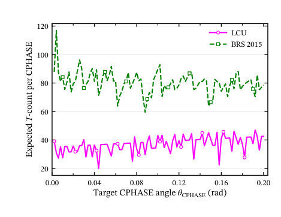
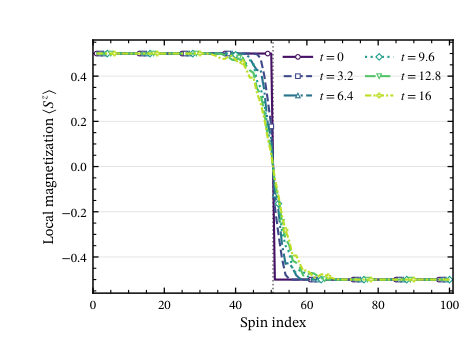
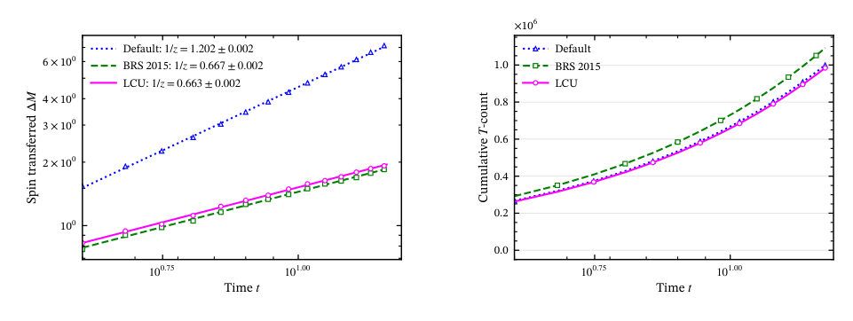
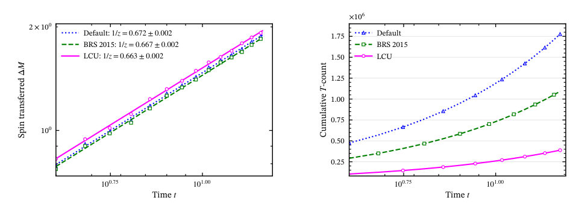
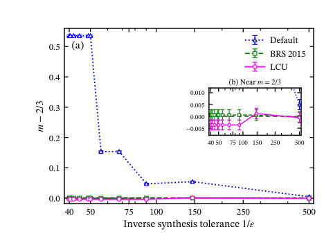
Summary. This paper introduces a novel, fault-tolerant compilation framework designed to simulate quantum dynamics while rigorously preserving continuous symmetries, such as SU(2). By circumventing theoretical obstructions using measurement and feed-forward, the method significantly reduces the required gate resources (T-count) compared to standard synthesis techniques. This has major implications for accurately simulating complex models like the Heisenberg chain and Fermi-Hubbard model.
Why it may be interesting. This work directly addresses the resource scaling and accuracy limitations of quantum simulation for strongly correlated systems by ensuring that the computational error does not corrupt fundamental physical symmetries like SU(2).
Main problem. The core problem is developing fault-tolerant quantum compilation methods that can accurately simulate time evolutions while strictly preserving underlying continuous symmetries.
Main result. The proposed symmetry-preserving compilation framework successfully reproduces expected physical exponents (like the transport exponent) for the 1D Heisenberg model at lower gate counts compared to standard, symmetry-agnostic synthesis methods.
Method. The authors develop a framework that circumvents number-theoretic obstructions by using measurement and feed-forward techniques within a Linear-Combination-of-Unitaries (LCU) protocol to maintain exact symmetry preservation.
Model / system. The primary testbed is the one-dimensional isotropic Heisenberg model, whose Hamiltonian possesses a global SU(2) rotational symmetry. The framework is also extended to lattice gauge theories and fermionic models like the Fermi-Hubbard model.
Key observables. Transport exponent (KPZ exponent), T-count (gate resource cost), and final-state fidelity.
Important parameters / regimes. The required T-count, the simulation time $t$, and the error tolerance $\epsilon$.
Assumptions / limitations. The simulation relies on approximating the time evolution $U(t) = e^{-iHt}$ via Trotterization, which is then compiled into the discrete Clifford+T gate set.
Figures summary. Not specified, but the notes reference comparisons of gate costs and fidelity between different synthesis methods.
Paper structure. The paper progresses from establishing the need for symmetry preservation in Trotterization, characterizing the number-theoretic obstruction, developing the LCU construction, benchmarking the method on the Heisenberg model, and finally extending the results to gauge and fermionic symmetries.
Fault-tolerant quantum simulation requires compiling symmetry-preserving time evolutions into discrete gate sets. Standard Clifford+T synthesis can break continuous symmetries even when the target evolution preserves them, causing compiled simulations to lose essential features of the original system. We develop a fault-tolerant compilation framework that preserves SU(2) symmetry exactly. We characterize the number-theoretic obstruction preventing symmetry-preserving unitary Clifford+T circuits from approximating arbitrary SU(2)-symmetric evolutions and circumvent it using measurement and feed-forward. The resulting synthesis confines compilation errors to the symmetry-preserving operator algebra rather than introducing symmetry-breaking perturbations. We demonstrate the algorithm by simulating transport in the one-dimensional Heisenberg model. At a lower matched T-count, for instance, 54 T gates per two-site Trotter step, standard synthesis yields an incorrect transport exponent, whereas our symmetry-preserving compilation reproduces the expected exponent for the same expected T-count. If instead each approach is allocated whatever resources are necessary to estimate this exponent to the same accuracy, our construction reduces the T-count by approximately a factor of five. We further extend the framework to gauge symmetries in lattice gauge theories and to particle-number and spin symmetries in fermionic models relevant to quantum chemistry and the Fermi-Hubbard model. These results show that symmetry-preserving fault-tolerant compilation can qualitatively change the effects of synthesis error while substantially reducing the resources required for quantum simulation.
Authors: Abdallah Arthur El Sahili, Francesco Sottile, Lucia Reining
Type: theory · Category: strongly correlated electrons · PDF: https://arxiv.org/pdf/2610.03569v1
Analysis basis: full PDF text, analyzed in chunks
Topic relevance: Keldysh / 2PI / non-Gaussian methods 3/5 · analog quantum simulation 1/5
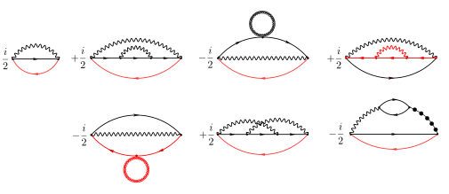
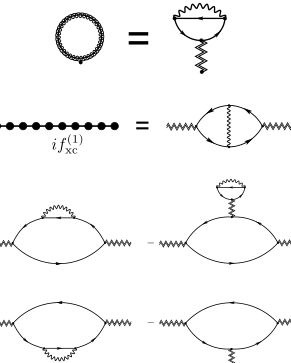
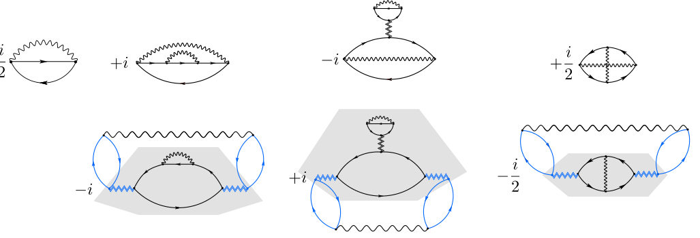
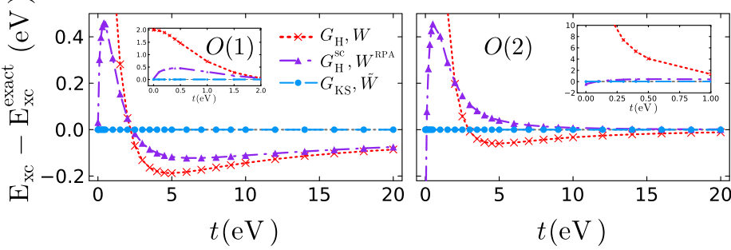
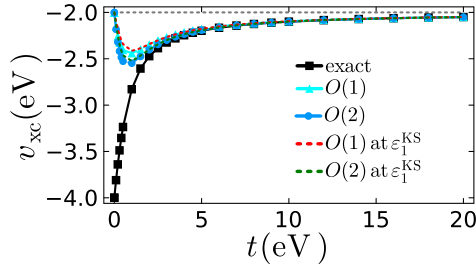
Summary. This paper addresses the theoretical inconsistency plaguing many-body perturbation theory by developing systematic, order-by-order expansions for electronic structure calculations. By focusing on a consistent framework derived from screened interactions, the authors propose that using ingredients derived from the Kohn-Sham system offers a robust path toward accurate energy and spectral predictions.
Why it may be interesting. The focus on systematic, rigorous diagrammatic expansions and the need for consistent approximations in correlated electron systems directly relates to advanced many-body physics techniques used in AMO and quantum optics.
Main problem. Many-body perturbation theory (MBPT) suffers from inconsistent results because different approximations lead to varying calculations for spectroscopic quantities and total energy.
Main result. The authors propose a consistent framework by deriving rigorous perturbation expansions, highlighting that the expansion based on exact Kohn-Sham ingredients is a promising route for accurate results.
Method. The work involves deriving systematic, order-by-order expansions of the Dyson equation using screened Coulomb interactions ($W$) up to the second order.
Model / system. The general many-body problem in condensed matter physics is studied, with the symmetric Hubbard dimer used as a specific model system for illustration.
Key observables. One-body Green's function ($G$), self-energy ($\Sigma$), total energy ($E_0$), and spectral functions ($A(\omega)$).
Important parameters / regimes. Correlation strength, the screened interaction $W$, and the order of the perturbation expansion (up to second order).
Assumptions / limitations. The authors focus on defining consistency by using a self-contained diagrammatic series, explicitly avoiding complex issues like self-consistency loops or Bethe-Salpeter equation approximations.
Figures summary. Not specified.
Paper structure. The paper establishes the Dyson equation, introduces screening via $W$, develops the perturbation theory for the self-energy ($\Sigma^{(1)}, \Sigma^{(2)}$), and discusses methods for calculating $G$ from $\Sigma$ to ensure theoretical consistency.
Many-body perturbation theory is a powerful framework to calculate spectroscopic quantities, as well as the total energy. However, the field suffers from the fact that different flavors of approximations lead to a wide range of results. We present several in principle exact expansions and discuss how to use them consistently. We concentrate on the first two orders in the respective screened Coulomb interaction. Of special interest is a consistent expansion around the Kohn-Sham system. We illustrate the performance of the various choices using the symmetric Hubbard dimer over a wide range of correlation strength. In particular, the expansion based on exact Kohn-Sham ingredients stands out as a promising route towards good energies and good spectra.
Authors: Arthur Braida, Joseph Cunningham, Jérémie Roland
Type: theory · Category: quantum information and computing · PDF: https://arxiv.org/pdf/2610.03295v1
Analysis basis: full PDF text, analyzed in chunks
Topic relevance: analog quantum simulation 3/5 · quantum measurements 1/5
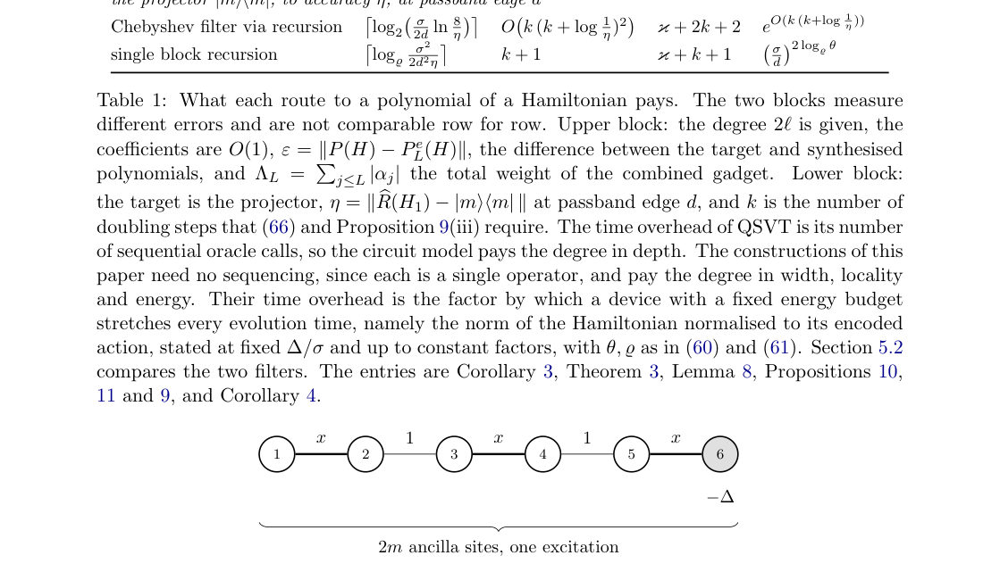
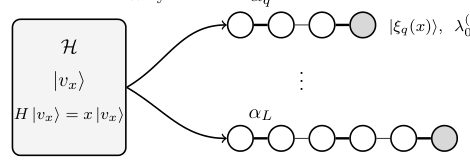
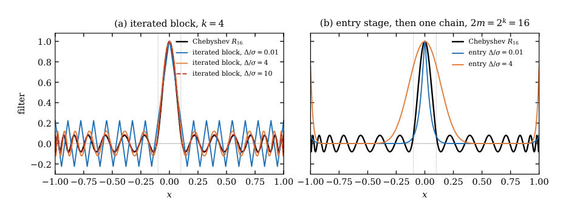
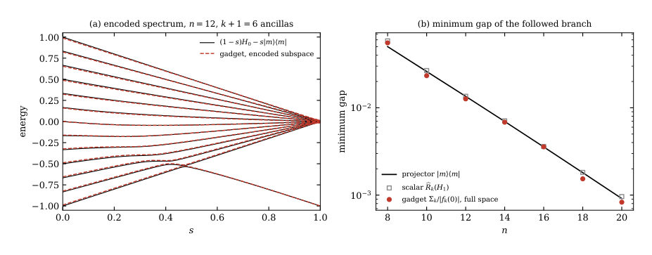
Summary. This paper introduces a novel 'gadget' construction using ancilla qubits attached to a local Hamiltonian $H$ to simulate non-local operations like $P(H)$. By analyzing the unique, analytic eigenvalues of these gadgets, the authors show they can synthesize any polynomial or filter specific eigenstates with controlled error decay. This offers a significant resource advantage over existing circuit-based methods.
Why it may be interesting. This work provides a powerful, resource-efficient alternative to standard quantum signal processing techniques for implementing complex functions of local Hamiltonians, directly impacting the feasibility of quantum simulation and quantum computation.
Main problem. The primary challenge is realizing a polynomial function $P(H)$ of a local Hamiltonian $H$ using a single, time-independent, local Hamiltonian operator, since $P(H)$ is generally non-local.
Main result. The authors demonstrate a gadget construction using ancilla qubits that synthesizes any polynomial $P(H)$ or filters a marked eigenstate with controlled error decay, achieving this with improved locality compared to standard circuit models.
Method. The method involves attaching short, structured chains of ancilla qubits (tridiagonal gadgets) to the input Hamiltonian $H$. The polynomial is synthesized by taking a weighted sum of the unique, analytic eigenvalues derived from these chains.
Model / system. The model is an analog quantum device implementing a local Hamiltonian $H$. The core computational element is the 'gadget,' which is a short chain of ancilla qubits whose isolated eigenvalue $\lambda_0(x)$ is an analytic function of the input $x$ (representing $H$).
Key observables. The isolated eigenvalue $\lambda_0(x)$ of the gadget, which is an analytic function of the input $H$. The fidelity of the state filter or the accuracy of the polynomial reproduction are key diagnostics.
Important parameters / regimes. The degree of the polynomial ($\ell$), the locality of the input Hamiltonian ($H$), the required accuracy ($\epsilon$), and the number of ancilla qubits ($O(\ell^2)$).
Assumptions / limitations. The construction relies on the existence of a unique, analytic eigenvalue branch $\lambda_0(x)$ for the gadget, and the ability to synthesize the polynomial via a weighted sum of these branches.
Figures summary. Figure 1 illustrates the structure of the even gadget $E_{2m}(x)$ for $m=3$. Table 1 compares the resource costs (ancillas vs. depth) of the gadget approach versus Quantum Singular Value Transformation (QSVT).
Paper structure. The paper establishes the problem of non-locality, introduces the gadget gadget based on eigenvalue analysis (Theorem A), proves the ability to synthesize any polynomial (Theorem B), and details a superior, iterative method for state filtering (Theorem C).
An analog device implements a local Hamiltonian H, but a polynomial P (H) is in general not local, so the device cannot implement it. We carry P (H), to any prescribed accuracy, as the action of a single time-independent local Hamiltonian on an explicitly described invariant subspace. Short chains of ancilla qubits are attached to H. A chain of 2m sites has a unique isolated eigenvalue that is an analytic function of the input vanishing to order exactly 2m, because the input must cross the chain and come back before it can shift the energy at the far end. Chains of different lengths therefore form a triangular family, and a weighted sum of them reproduces a prescribed polynomial term by term. Even chains give the even part and odd chains the odd part, so any polynomial is reached. We prove uniqueness, analyticity and coefficient bounds uniform in the chain length for inputs H of norm below any r < 1. Where the circuit model pays degree 2l in 2l sequential oracle calls, the result here is one Hamiltonian of locality two more than that of H, which pays the degree in O(l^2 + log2^(1/eps)) ancillas and in energy scale. As an application we filter a marked eigenstate of a local Hamiltonian. Composing a synthesised square along the Chebyshev doubling identity works, but its energy scale grows quasi-polynomially with the degree. Iterating instead the exact eigenvalue branch of the two-site chain k times gives a filter on k + 1 ancilla qubits whose error decays geometrically in k, at an energy scale polynomial in the inverse passband width and independent of k, the locality growing by one per stage. In adiabatic optimisation with a rank-one driver, the construction replaces that non-local driver, by a Hamiltonian with O(log n) ancillas and O(log n)- body terms, at an energy scale polynomial in n. Simulations including every ancilla reproduce the spectrum of the ideal algorithm.
Authors: Ryan J. J. Connor, Andrew J. Daley, Callum W. Duncan, Preetma Soin
Type: theory · Category: numerical methods · PDF: https://arxiv.org/pdf/2610.03254v1
Analysis basis: full PDF text, analyzed in chunks
Topic relevance: methods for driven-dissipative 3/5 · Keldysh / 2PI / non-Gaussian methods 1/5
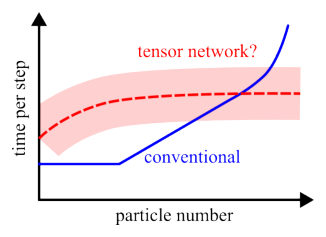
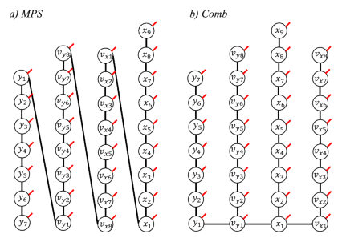
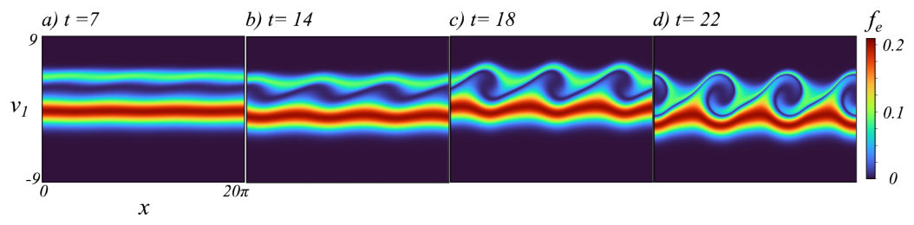
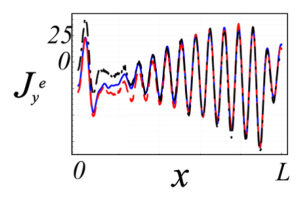
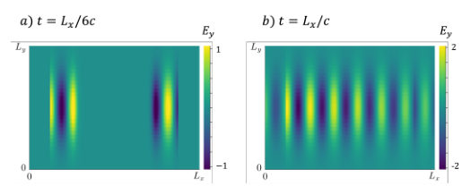
Summary. This paper presents a novel approach to simulating complex plasma physics by replacing traditional Particle-in-Cell codes with tensor-network methods, specifically using Matrix Product States. This allows for solving the governing equations in high-dimensional phase space while mitigating issues like statistical noise and improving computational scaling. The framework is extended to model external drivers, such as injected laser fields, marking a significant step toward quantum-inspired plasma simulation.
Why it may be interesting. This work directly applies advanced tensor-network techniques, which are central to quantum information and many-body physics, to a classical, non-equilibrium field theory problem (plasma dynamics). The successful adaptation of MPS to handle complex field coupling is a significant methodological advance.
Main problem. The primary challenge is solving the high-dimensional, nonlinear partial differential equations governing plasma physics, which is computationally intensive using standard methods.
Main result. The authors successfully demonstrated that tensor-network methods can model complex plasma phenomena, such as instabilities and laser-plasma interactions, while maintaining favorable computational scaling.
Method. They propose using tensor-network representations, specifically Matrix Product States (MPS), to discretize the full phase space grid, allowing for the simulation of the Vlasov equation.
Model / system. The model is plasma dynamics governed by the Vlasov-Maxwell kinetic equations. The simulation involves tracking particle distributions in phase space and coupling this to electromagnetic field evolution.
Key observables. Electron distribution snapshots in phase space, current density, and the propagation of electric field components ($E_y$).
Important parameters / regimes. The simulation involves parameters like Debye length constraints, time steps ($\Delta t = 0.0014$), and bond dimensions ($\chi$) required for MPS accuracy.
Assumptions / limitations. The key assumption is that the physics can be accurately captured by the tensor-network representation, and the method relies on careful boundary condition handling when injecting external fields (TFSF approach).
Figures summary. Figures illustrate the comparison of time complexity (PIC vs. Tensor Network), the MPS encoding structure, snapshots of electron distributions during instabilities, convergence tests for wave problems, and the setup for laser field injection.
Paper structure. The paper first establishes the computational bottleneck of plasma simulations using PIC codes. It then introduces tensor-networks as a solution, detailing the MPS encoding of the Vlasov equation. Finally, it extends this framework to incorporate external electromagnetic fields using the Total Field Scattered Field (TFSF) approach for advanced simulations.
Solving the high-dimensional, nonlinear partial differential equations that govern the rich physics of plasmas remains a major computational challenge. In fluid dynamics, quantum-inspired methods based on tensor-network techniques have recently emerged as a promising new paradigm, offering large degrees of data compression on conventional hardware and a natural pathway towards solving exponentially large problems on quantum computers. Early studies suggest that tensor-network methods may also help overcome key bottlenecks in computational plasma dynamics, particularly for industry-relevant scenarios where conventional simulations remain costly. In this work, we present recent progress in developing tensor-network methods compared to standard particle-in-cell codes and discuss their capability to overcome the bottlenecks of conventional approaches. We further extend the tensor-network formulation to support the insertion of electromagnetic fields at arbitrary spatial locations. This capability is demonstrated through the injection of a laser field to accelerate a plasma, providing a key step towards tensor-network-based simulation of externally driven plasma systems.
Authors: Zhihui Wang, Sujit Roy, Manil Maskey, Rahul Ramachandran
Type: theory · Category: quantum information and computing · PDF: https://arxiv.org/pdf/2610.03595v1
Analysis basis: full PDF text, analyzed in chunks
Topic relevance: analog quantum simulation 3/5 · Tavis-Cummings & cavity-many-emitter 1/5
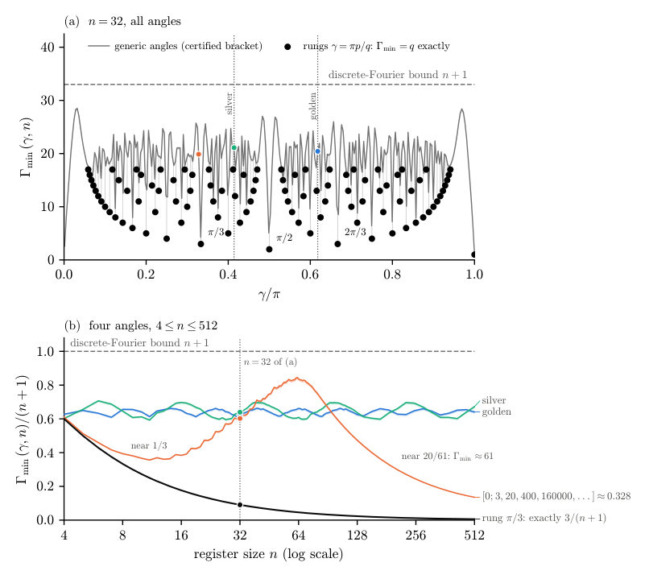
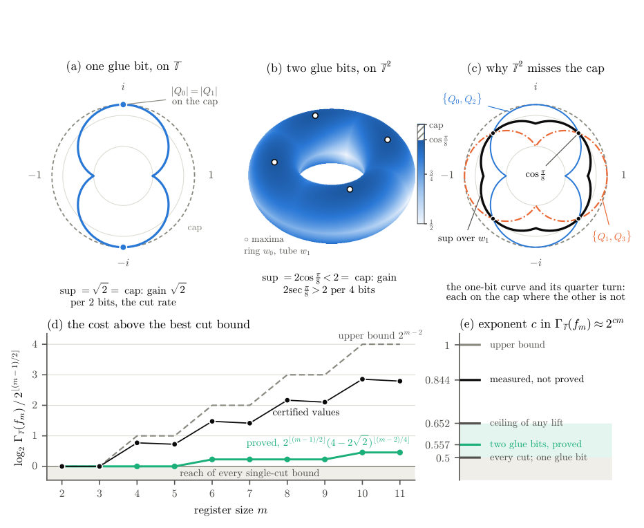
Summary. This work rigorously determines the minimum resource overhead required to simulate quadratic collective phase gates, such as those found in Kerr nonlinear optics or spin squeezing. The cost is found to be dictated by the arithmetic nature of the phase angle $\gamma/\pi$, yielding exact integer costs at rational angles and polynomial scaling otherwise. This establishes a fundamental link between quantum simulation complexity and number theory.
Why it may be interesting. It provides deep mathematical insights into the resource cost of simulating fundamental quantum dynamics (like Kerr nonlinearities) by connecting it to number theory (Diophantine approximation) and quantum resource theory.
Main problem. The paper determines the minimal sampling overhead required to implement a specific quadratic collective phase unitary, $e^{-i\gamma K^2}$, using a Linear Combination of Unitaries (LCU) sampled from a restricted set of gates.
Main result. The minimal overhead depends critically on the ratio $\gamma/\pi$: it is exactly $q$ for rational angles $\pi p/q$ (resonances), $\Theta(n)$ if $\gamma/\pi$ is badly approximable, and can be exponential if symmetry is broken.
Method. The analysis uses techniques from harmonic analysis and number theory, framing the problem as an atomic-norm minimization problem dual to a sup-norm bound on trigonometric polynomials.
Model / system. The target unitary is the quadratic collective phase $e^{-i\gamma K^2}$, which models physical processes like the Kerr phase in bosonic modes, the one-axis-twisting gate in spin squeezing, and the penalty layer in quantum optimization.
Key observables. Sampling overhead ($\Gamma$), the angle parameter ($\gamma$), and the register size ($n$).
Important parameters / regimes. The ratio $\gamma/\pi$, which dictates the cost structure via continued fraction analysis (rational vs. badly approximable).
Assumptions / limitations. The analysis assumes the target unitary can be sampled as an LCU from a specific set of implementable single-qubit rotation layers.
Figures summary. The notes mention Figure 1 classifying $\Gamma_{\min}$ vs. $n$ and $\gamma$ into resonances, plateaus, and the discrete-Fourier bound.
Paper structure. The paper develops by establishing the cost as a norm (Theorem A), analyzing specific resonant cases (Theorem B), establishing the general scaling behavior (dichotomy in Theorem C), and finally providing a master formula for the deep-resonance regime (Theorem D).
We consider the cost of implementing the quadratic collective phase $e^{-iγK^2}$, with $K$ a collective observable of evenly spaced spectrum, such as the permutation-symmetric Hamming weight. This gate is the cardinality-penalty layer of constrained quantum optimization, the one-axis-twisting gate of spin squeezing and the Kerr phase of a bosonic mode. Instead of two-qubit gates, it can be sampled as a linear combination of single-qubit rotation layers (an LCU) at an overhead $Γ$. We determine the minimal overhead. Ancilla-free sampling of the layers reproduces the target's outcome probabilities up to this factor, and no smaller factor works for every input; when $K$ is permutation symmetric, arbitrary single-qubit gates do no better. The minimal overhead's growth with the register size $n$ is set by the continued fraction of $γ/π$: rational angles $πp/q$ in lowest terms cost exactly $Γ=q$ for every $n\ge2q-2$; the cost is $Θ(n)$ if and only if $γ/π$ is badly approximable; and a master formula, proved two-sided near low-denominator rationals, reads it off the nearest one. Without the symmetry the cost over single-qubit gates can be exponential: for the binary-weighted $K=\sum_j2^jx_j$ the squaring phase of Fourier arithmetic on $m$ qubits costs at least $2^{0.557m-O(1)}$, beyond the $2^{m/2}$ ceiling of every cut bound, by a new certificate-lifting argument. The Fourier-based LCU of Carrera Vazquez, Egger and Woerner (2026), which guarantees $Γ\le n+1$, is optimal up to a constant factor at typical angles at fixed $n$; at rational angles the unique optimizer is the fractional-revival decomposition of Kerr optics, a recipe independent of $n$. In bosonic simulation, the Kerr-gate phase-shifter decomposition of Upreti, Quesada and Chabaud (2026) is the unique optimum over phase shifters, and a finite-cost one exists only at rational $γ/π$.
Authors: Sunkyu Yu, Xianji Piao, Namkyoo Park
Type: theory · Category: disordered systems and neural networks · PDF: https://arxiv.org/pdf/2610.02888v1
Analysis basis: full PDF text, analyzed in chunks
Topic relevance: analog quantum simulation 3/5 · methods for driven-dissipative 1/5
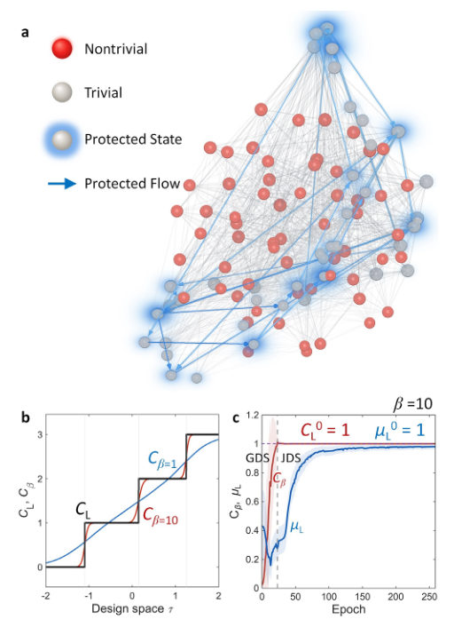
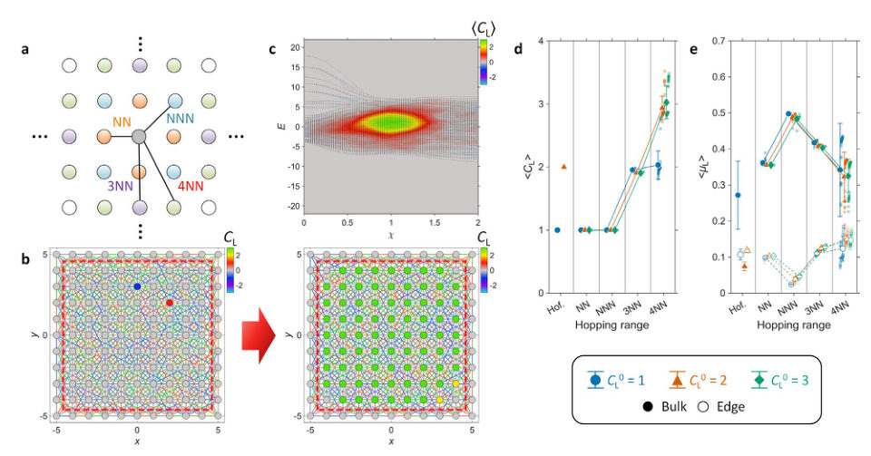
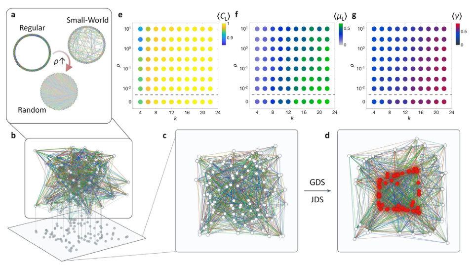
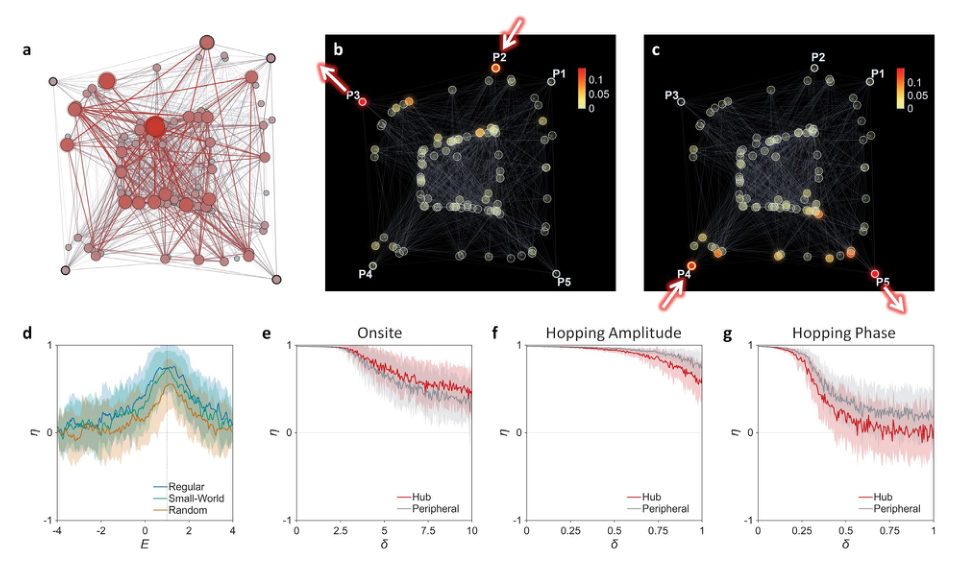
Summary. This paper proves that topological insulating phases can be engineered on arbitrary complex networks, moving beyond simple periodic lattices. By developing a sophisticated design framework, the authors show that network structure, especially small-world characteristics, enhances topological robustness and directional transport. This establishes network complexity as a key resource for realizing advanced quantum electronic functionalities.
Why it may be interesting. The focus on network topology and disorder robustness connects directly to understanding complex quantum systems, which is relevant for designing quantum devices or modeling quantum information flow in structured media.
Main problem. The research aims to generalize the concept of topological insulators beyond simple periodic lattices to complex, arbitrary network structures.
Main result. The study demonstrates that complex networks, particularly small-world architectures, can host robust topological insulating phases, with network complexity acting as a resource for high-capacity and reconfigurable transport.
Method. A gradient-based, conflict-free multi-objective inverse-design framework is developed to tailor hopping phases and node positions to achieve desired topological invariants.
Model / system. The system models topological insulators on complex graphs, including high-degree Hofstadter lattices, regular, small-world, and random networks, governed by a generalized magnetic graph Hamiltonian.
Key observables. Local Chern index ($C_L$), local gap ($\mu_L$), chirality ($\eta$), and port-to-port transmission matrices ($T_{pq}$).
Important parameters / regimes. Node degree ($k$), rewiring parameter ($ ho$), and energy ($E$).
Assumptions / limitations. The analysis relies on 2D embedding of abstract networks and uses spectral localizers and surrogate models for optimization.
Figures summary. Figures illustrate the design process, the evolution of topological phases across network topologies (regular to random), and the superior circulator behavior and robustness of small-world TIs.
Paper structure. The paper systematically develops a design framework, applies it to various network types (Hofstadter, small-world, random), and analyzes the resulting topological invariants, robustness against disorder, and directional transport properties.
The landscape of topological insulators has expanded beyond its traditional domain of periodic lattices with short-range hopping. Related studies have explored topological phenomena under non-Euclidean geometries, disordered structures, and long-range hopping, progressively narrowing the gap between topological phases of matter and complex networks. Here we demonstrate that genuine complex networks, far beyond periodic lattices and their conventional variants, can themselves host topological insulating phases. By developing a nonconflicting design framework for multiple topological objectives, we realize topological insulators in high-degree Hofstadter lattices and across regular, small-world, and random networks. This generalization uncovers distinct network-specific features, including an expanded range of attainable topological characteristics, a degree-dependent transition from Hofstadter-type to Haldane-type Chern insulators, and, most notably, the superior robustness and reconfigurability of small-world topological insulators. Our graph-theoretic framework establishes network complexity as a resource for realizing high-capacity and reconfigurable topological insulators.
Authors: Adam Leicester, Zixu Wang, Jack Mandell, Yangyang Xu, Osama Muhammad Raisuddin, Haimeng Zhang, Jian Shi
Type: theory · Category: strongly correlated electrons · PDF: https://arxiv.org/pdf/2610.03654v1
Analysis basis: full PDF text, analyzed in chunks
Topic relevance: analog quantum simulation 3/5
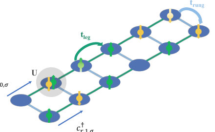
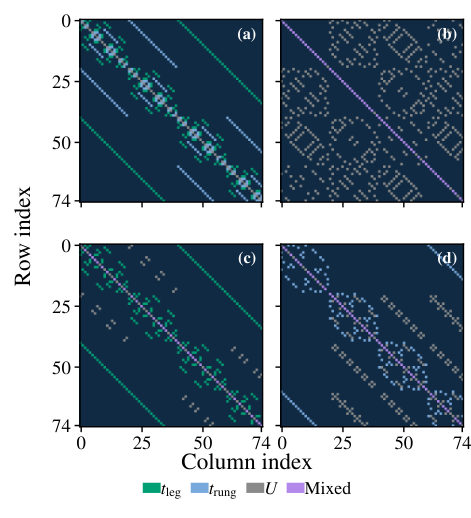
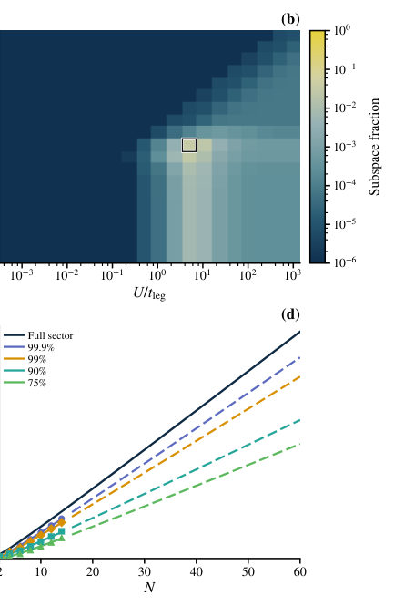
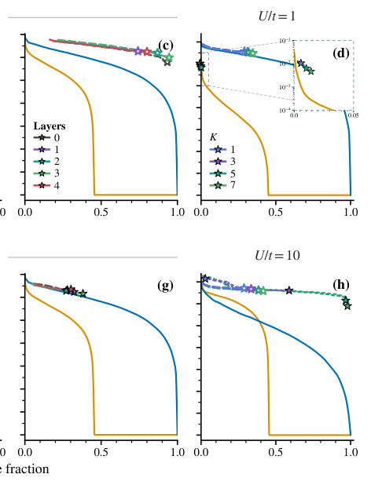
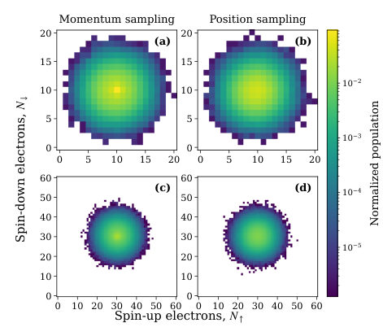
Summary. This work analyzes the efficiency of quantum sampling techniques for simulating the Fermi-Hubbard ladder, demonstrating that the choice of basis representation is crucial for success. By comparing momentum, position, and bonding bases, the authors show that the best basis changes systematically with interaction parameters. Ultimately, they argue that realizing scalable quantum simulation requires a holistic co-design approach involving the basis, the quantum circuit, and the classical reconstruction method.
Why it may be interesting. The findings directly address the resource scaling and feasibility of quantum simulation for strongly correlated materials, providing critical guidelines for designing quantum algorithms for condensed matter physics.
Main problem. The paper investigates how the choice of basis representation affects the efficiency of sample-based quantum diagonalization (SQD) for simulating strongly correlated electron systems.
Main result. The optimal basis for sampling is highly dependent on the interaction strength and hopping anisotropy, suggesting that scalable quantum simulation requires co-designing the basis, quantum circuit, and classical reconstruction procedure.
Method. The authors compare various physically motivated one-body orbital rotations (e.g., momentum, bonding/antibonding) to determine which basis yields the most compressible representation of the ground-state wave function.
Model / system. The primary model studied is the Fermi-Hubbard Ladder, a minimal system relevant to cuprate superconductors, described by a Hamiltonian involving hopping ($t$) and onsite repulsion ($U$).
Key observables. Compressibility (minimum basis size to retain 99% ground-state weight), relative energy error in statevector SKQD calculations, and two-qubit gate count/depth for hardware mapping.
Important parameters / regimes. Interaction strength ($U/t$), hopping anisotropy ($t_{ ext{rung}}/t_{ ext{leg}}$), and the specific basis used for sampling (position, momentum, etc.).
Assumptions / limitations. The core assumption is that the target ground state is sufficiently compressible in the sampled basis; otherwise, the advantage of SQD is lost.
Figures summary. Figures compare Hamiltonian matrix structures in different bases, show the dependence of reconstruction error on the retained subspace fraction, and compare hardware overheads for different circuit mappings.
Paper structure. The paper systematically analyzes the basis dependence of SQD efficiency, comparing multiple physically motivated bases for the Fermi-Hubbard ladder, followed by detailed hardware overhead and reconstruction quality analyses.
Sample-based quantum diagonalization can reduce the classical cost of many-body calculations by restricting diagonalization to configurations identified through quantum sampling, but its efficiency depends on how compactly the target state is represented in the sampled basis. We investigate this dependence for sample-based Krylov quantum diagonalization of the half-filled Fermi-Hubbard ladder using physically motivated one-body orbital rotations. Across position, momentum, bonding/antibonding, and leg-mode representations, the most compressible basis varies systematically with interaction strength and hopping anisotropy, with momentum sampling favored in the weakly interacting regime and geometry- or interaction-adapted representations becoming advantageous as the dominant energy scale changes. Near intermediate interaction and isotropic hopping, however, even the most favorable representation remains poorly compressible. Statevector SKQD calculations further show that basis choice strongly affects sampling efficiency. Hardware calculations on systems containing up to 120 qubits retain qualitative signatures of this basis dependence while revealing increasing particle-number leakage and reconstruction sensitivity with system size. These results show that scalable sample-based diagonalization requires co-design of the sampled representation, quantum circuit, and classical reconstruction procedure.
Authors: Lionel J. Dmello, Xiangling Xu, Marc-Olivier Renou, David Gross
Type: theory · Category: other · PDF: https://arxiv.org/pdf/2610.03694v1
Analysis basis: full PDF text, analyzed in chunks
Topic relevance: quantum measurements 3/5
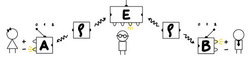
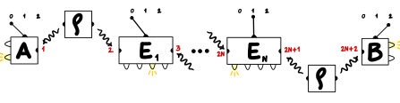
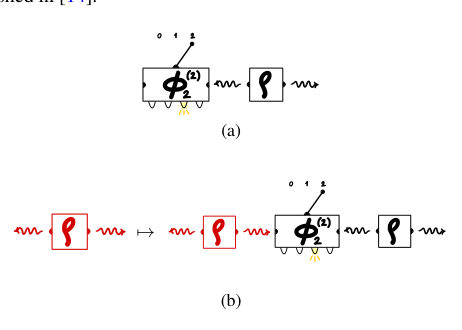
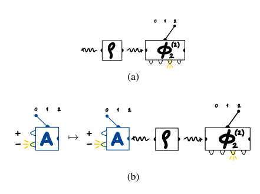
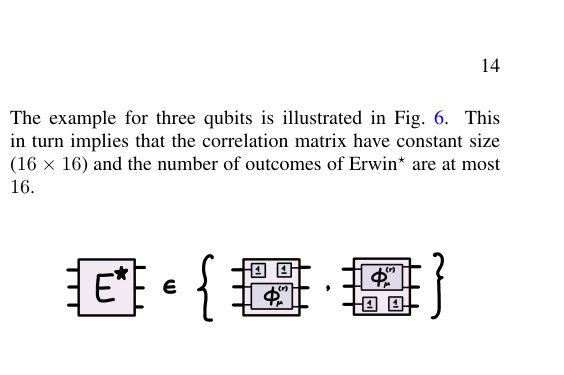
Summary. This paper develops a method to certify that a physical theory is quantum mechanical by analyzing correlations derived from multi-party entanglement swapping and iterated teleportation. By constructing a hierarchy of such tests, the authors demonstrate that satisfying these constraints forces the underlying probabilistic theory to match quantum theory for finite dimensions. This suggests a potential 'self-testing' capability for quantum theory.
Why it may be interesting. This work provides a rigorous, operational framework for testing the fundamental postulates of quantum mechanics using entanglement and teleportation, which is highly relevant for understanding the limits of quantum information processing.
Main problem. The paper addresses the foundational question of whether quantum theory can be fully characterized by operational constraints, specifically by constructing a set of correlations that, if realized, force the underlying theory to be quantum mechanics.
Main result. The authors show that by analyzing correlations derived from a hierarchy of entanglement swapping and teleportation experiments, they can constrain the effective probabilistic theory to be quantum theory for finite dimensions.
Method. The methodology involves constructing and analyzing correlation matrices derived from multi-party entanglement swapping and iterated teleportation protocols, using the formalism of General Probabilistic Theories (GPTs).
Model / system. The focus is on characterizing finite-dimensional quantum theory, specifically for systems described by $(\mathbb{C}^d)^{\otimes n}$ (n-qudits). The analysis uses Pauli operators and generalized Pauli operators to define measurements and correlations.
Key observables. Correlation matrices $C^{(r)}_\mu$, joint outcome probabilities $p(\vec{\mu}|\vec{r})$, and the structure of teleportation maps $\Lambda(\vec{r})_\mu$.
Important parameters / regimes. The dimensionality $d$ and the number of parties $n$ are key parameters; the analysis involves testing stability across an increasing number of teleportation steps $N$.
Assumptions / limitations. The analysis assumes the existence of a General Probabilistic Theory (GPT) framework and, in some parts, relies on the assumption that the state space is compact or that the correlations are preserved under iteration.
Figures summary. Figures illustrate the experimental setups for entanglement swapping (e.g., three-party setups for qubits) and the structure of the teleportation hierarchy ($T_N$) used to test correlation stability.
Paper structure. The paper progresses by first defining the problem in terms of GPTs, then constructing the correlation tests via entanglement swapping and teleportation hierarchies, and finally deriving strong constraints on the underlying theory from the stability of these correlations.
A key goal in the foundations of quantum mechanics is to identify operational constraints characterizing physical theories. Bell inequalities do so for classical probability theory, while Tsirelson's bound provides a first step for quantum mechanics. Here, we address the dual question: Can one certify that all correlations predicted by quantum theory are actually realizable? In this work, we construct a finite number of two-body correlations such that the only probabilistic theory that (1) realizes them, and (2) does so in a way that is stable under iterated teleportation, is quantum theory. For $(\mathbb{C}^d)^{\otimes n}$, Condition (1) can be verified using $\operatorname{poly}(d,n)$ measurement settings. Condition (2) may be understood as a hierarchy of tests, one for each number $N$ of teleportation steps. There is thus a sense in which finite-dimensional quantum theory can be self-tested. In particular, one can certify the existence of Bell inequality violations larger than any that have been directly observed.
Authors: Yu Yang, Fengyu Guan, Shiping Guo, Ruifeng Liu, Pei Zhang, Fuli Li
Type: theory · Category: other · PDF: https://arxiv.org/pdf/2610.03233v1
Analysis basis: full PDF text, analyzed in chunks
Topic relevance: quantum measurements 3/5
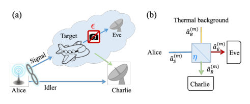
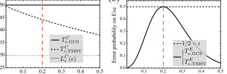
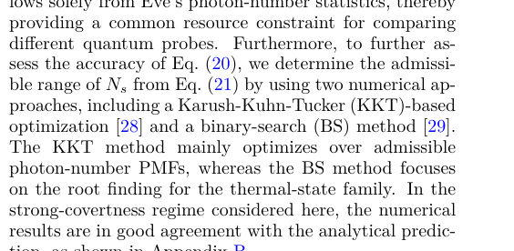
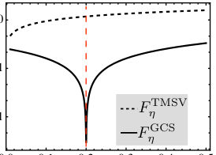
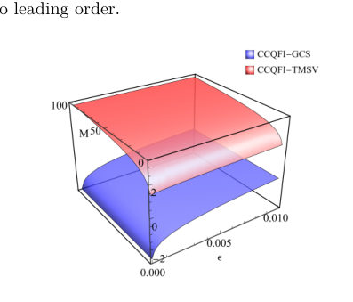
Summary. This paper develops a theoretical framework connecting the requirement of remaining covert during quantum sensing with the ultimate achievable estimation precision. By introducing the covertness-constrained quantum Fisher information (CCQFI), the authors quantify how the need to evade detection limits the available probe energy. They show that different quantum states, like TMSV, can maintain superior metrological advantages even when severely constrained by the covertness requirement.
Why it may be interesting. This work directly bridges quantum estimation theory (metrology) with quantum security/detection theory (covertness), providing a resource-constrained view of quantum sensing that is highly relevant to quantum optics and quantum information.
Main problem. The paper establishes a unified framework to quantify how the requirement of remaining covert (avoiding detection by an adversary) constrains the ultimate precision achievable in quantum target sensing.
Main result. The covertness constraint is identified as a quantitative resource that governs the metrological limits, showing that different quantum probes (GCS vs. TMSV) exhibit distinct scaling behaviors in the strong covertness regime.
Method. The authors use quantum information theory tools, including the covertness-constrained quantum Fisher information (CCQFI), to bound the estimation precision for target reflectivity.
Model / system. The system models quantum target sensing where a low-reflectivity target is probed. The analysis compares two Gaussian probes: Gaussian-distributed coherent-state (GCS) and Two-mode squeezed-vacuum (TMSV) states.
Key observables. Covertness-constrained Quantum Fisher Information (CCQFI) and Covertness-constrained Classical Fisher Information (CFI).
Important parameters / regimes. Covertness parameter ($\epsilon$), probe energy ($ ext{N}_s$), and the number of probe copies ($M$).
Assumptions / limitations. The analysis relies on perturbative bounds for small $\epsilon$ and assumes the validity of Gaussian state descriptions for the probes.
Figures summary. Figures illustrate the schematic setup of quantum covert target detection and show the numerical convergence of the CFI under different photon-number truncations.
Paper structure. The work progresses by first defining the covertness constraint via error bounds, then developing the CCQFI framework, and finally calculating and comparing the achievable precision limits for GCS and TMSV probes under this constraint.
Quantum covert target sensing aims to detect low-reflectivity targets embedded in the thermal environment while avoiding discovery by an adversary. This covertness requirement constrains the admissible probe energy, thereby imposing a trade-off between covertness and sensing performance. However, how this resource constraint determines the ultimate estimation precision of the target parameter remains largely unexplored. To fill this gap, we establish a unified framework connecting covert target discrimination with quantum-enhanced parameter estimation. We first present perturbative $ε$-covertness-induced bounds on the probe energy, which yield an admissible energy window narrowing as $\mathcal{O}(\sqrt{ε/M})$. Moreover, we introduce the covertness-constrained quantum Fisher information (CCQFI) to quantify the ultimate precision of target-reflectivity estimation and assess its attainability with specific measurements. For Gaussian-distributed coherent-state (GCS) and two-mode squeezed vacuum (TMSV) probes, their CCQFIs scale as $\mathcal{O}(ε)$ and $\mathcal{O}(M)+\mathcal{O}(\sqrt{εM})+\mathcal{O}(ε)$, respectively. In particular, in the strong covertness regime $ε\to0$, the GCS CCQFI vanishes, whereas the TMSV retains a finite $\mathcal{O}(M)$ contribution exhibiting a pronounced metrological advantage. Besides, photon counting saturates the GCS CCQFI, whereas homodyne detection achieves a higher attainability for the TMSV probe. Our work identifies covertness as a quantitative resource constraint governing the metrological limits of quantum target sensing.
Authors: Jiwan Kang, Namshik Han
Type: experiment · Category: quantum information and computing · PDF: https://arxiv.org/pdf/2610.03379v1
Analysis basis: full PDF text, analyzed in chunks
Topic relevance: QC/QI experiment 3/5
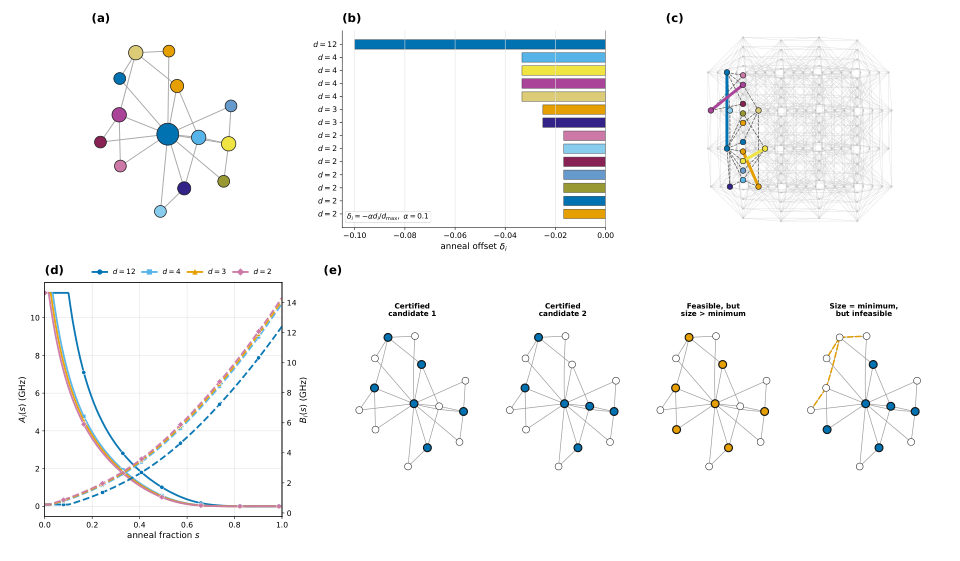
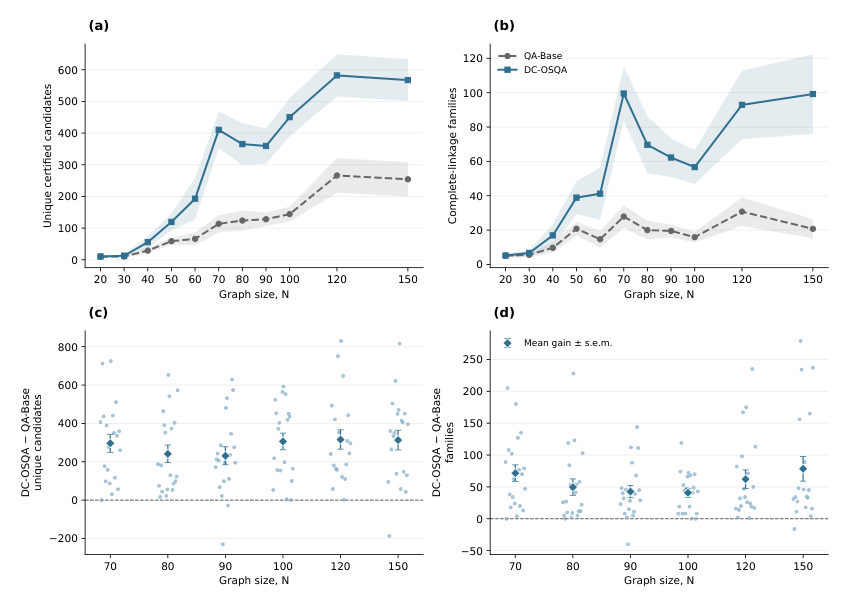
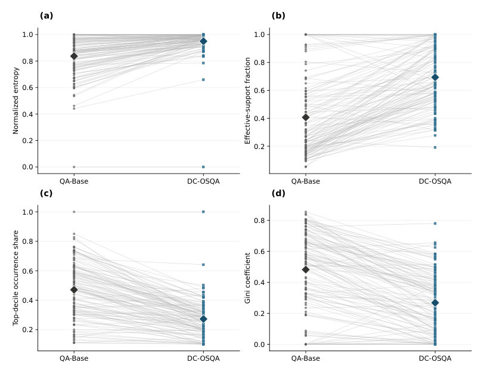
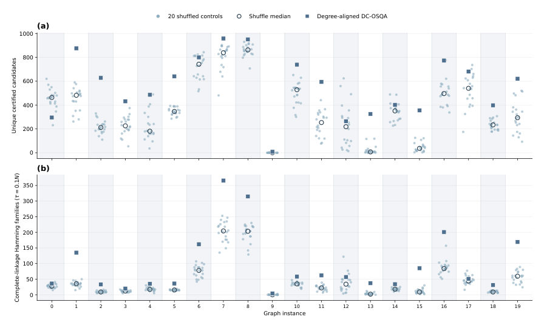
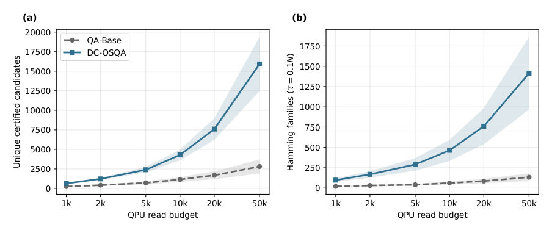
Summary. This paper demonstrates that tailoring the quantum annealing schedule using vertex degrees—a structural property of the Minimum Vertex Cover problem—can significantly increase the diversity and count of certified optimal solutions found on a quantum annealer. By implementing degree-conditioned offsets, the authors show they can steer the sampling process to explore a richer set of degenerate optima within a fixed computational budget.
Why it may be interesting. The explicit manipulation of the quantum annealing schedule using problem structure (degree) to control the sampling distribution of degenerate ground states is highly relevant to understanding the limitations and potential enhancements of quantum optimization algorithms.
Main problem. The study investigates how incorporating problem-specific structural information, derived from vertex degrees, can steer the composition of certified optimal solutions sampled by quantum annealers for the Minimum Vertex Cover (MVC) problem.
Main result. Degree-conditioned annealing offsets (DC-OSQA) significantly increased the mean number of distinct certified candidates and Hamming-distance families compared to a zero-offset baseline on sparse Barabási–Albert graphs.
Method. The authors implemented DC-OSQA by assigning anneal offsets proportional to the vertex degree, comparing its performance against a standard zero-offset quantum annealing baseline.
Model / system. The work uses quantum annealers, specifically the D-Wave Advantage2 QPU, to solve the MVC problem encoded as a QUBO. The core technique involves modifying the annealing Hamiltonian via degree-dependent offsets.
Key observables. Mean number of distinct certified candidates, mean number of complete-linkage Hamming-distance families, and the difference in effective support ($\Delta S_{ ext{eff}}$).
Important parameters / regimes. Graph size N (70-150), offset scale $\alpha$, and the fixed QPU read budget.
Assumptions / limitations. The analysis is restricted to sparse Barabási–Albert graphs and assumes a fixed, finite QPU read budget.
Figures summary. Figures summarize the gains of DC-OSQA over baselines in unique certified candidates and Hamming families, showing positive gains across tested sizes.
Paper structure. The paper develops the DC-OSQA protocol based on vertex degrees, compares its performance against a zero-offset baseline using quantitative metrics (certified support size), and concludes that the degree rule successfully alters the observed set of optimal solutions.
Quantum annealers can sample degenerate optima unevenly, so the composition of finite-read output matters when multiple solutions are sought. We investigate whether problem structure can steer this output through node-dependent anneal offsets for Minimum Vertex Cover (MVC). In MVC, vertex degree equals the number of incident edge-cover constraints and therefore measures local constraint participation. We use this relation to define degree-conditioned offset-scheduled quantum annealing (DC-OSQA), a static rule assigning more negative offsets to vertices with larger max-normalized degree. Experiments used a D-Wave Advantage2 system1 quantum processing unit (QPU). For each graph, DC-OSQA was compared with a zero-offset baseline using the same MVC encoding, fixed physical embedding, majority-vote chain decoding, and 1000-read budget. A sampled bitstring was counted as a certified candidate only if it represented a feasible vertex cover and its cardinality matched the minimum independently certified by integer linear programming. Across 120 paired comparisons on sparse Barabasi-Albert graphs with two attachments per added vertex and graph sizes N = 70-150, DC-OSQA increased the mean number of distinct certified candidates from 171.7 to 455.8 and the mean number of complete-linkage Hamming-distance families from 22.5 to 80.0; paired gains were positive at every tested size. These shifts, together with lower empirical concentration, indicate a change in the composition of the observed certified support. At N = 150, the degree-aligned assignment exceeded the within-instance mean over 20 random reassignments of the same offset values in 19 of 20 graphs for certified-support size and all 20 graphs for Hamming families. Within the tested ensemble, these results show that an MVC-specific degree rule changes the certified optima observed within a fixed QPU read budget.
Authors: Avijit Mandal, Christophe Piveteau, Henry D. Pfister, Joseph M. Renes
Type: theory · Category: quantum information and computing · PDF: https://arxiv.org/pdf/2610.03674v1
Analysis basis: full PDF text, analyzed in chunks
Topic relevance: quantum measurements 3/5
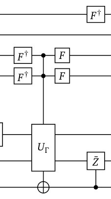
Summary. This paper develops an efficient, capacity-achieving protocol for generating entanglement over noisy quantum channels, specifically targeting pure-loss Bosonic channels. It achieves this by adapting classical coding theory tools, like polar codes, to construct quantum error-correcting codes. The resulting protocol is explicitly decodable, marking a significant theoretical advance in quantum communication theory.
Why it may be interesting. This work provides concrete, implementable quantum coding techniques for bosonic systems, which is highly relevant for quantum optics and quantum information processing involving continuous variables or bosonic modes.
Main problem. The paper addresses the challenge of constructing efficient coding schemes that achieve the ultimate quantum communication limits (quantum capacity) over noisy quantum channels.
Main result. They present an explicit and efficiently decodable entanglement generation protocol that achieves the coherent information for pure-loss Bosonic channels and related PDPC channels.
Method. The scheme utilizes polar codes to construct quantum error-correcting codes (EACSS) and employs specialized quantum decoders (POVMs) for both amplitude and phase information.
Model / system. The focus is on quantum communication over pure-loss Bosonic channels, which are modeled using finite fields and $d$-ary strings. The theoretical framework involves entanglement distillation and quantum capacity calculations.
Key observables. Fidelity of the output entangled state, coherent information, and the net rate of entanglement generation.
Important parameters / regimes. The channel loss parameter $\eta$, the code length $m$, and the alphabet size $d$.
Assumptions / limitations. The construction relies on the commutativity properties of certain operators in PDPC channels and the assumption that the error decay is exponential for the approximation to hold.
Figures summary. Figure 1 illustrates the entanglement distillation scheme, involving the EACSS code, syndrome extraction, and the application of POVMs $\Lambda$ and $\Gamma$.
Paper structure. The paper builds from general quantum communication theory to specific constructions for PDPC channels. It details the use of polar codes for two types of channels, deriving the necessary decoders (amplitude and phase) through techniques like Density Evolution and successive-cancellation decoding, culminating in the capacity-achieving protocol.
While the ultimate limits on the rate of quantum communication over noisy channels are well-established, very few efficient coding schemes achieving these limits are known. This contrasts sharply with transmitting classical data over classical channels, where polar codes and low-density parity-check codes both efficiently achieve the classical capacity of any noisy channel. In this work we construct an efficient entanglement generation scheme which achieves the coherent information for a broad class of channels. For degradable channels in the class, which includes truncated versions of the pure loss Bosonic channel, the resulting scheme achieves the quantum capacity. The construction makes use of polar codes for two kinds of classical-input, quantum-output (CQ) channels: those with commuting outputs and those whose outputs are heralded mixtures of pure states. The former case is amenable to decoding by classical polar decoding algorithms, the latter by the belief propagation with quantum messages (BPQM) algorithm. To our knowledge, this construction is the first explicit and efficiently decodable protocol that achieves the energy-constrained quantum capacity of the pure-loss Bosonic channel.
Authors: Swarup Sangiri, A Taraphder
Type: theory · Category: other · PDF: https://arxiv.org/pdf/2610.03104v1
Analysis basis: full PDF text, analyzed in chunks
Topic relevance: analog quantum simulation 3/5
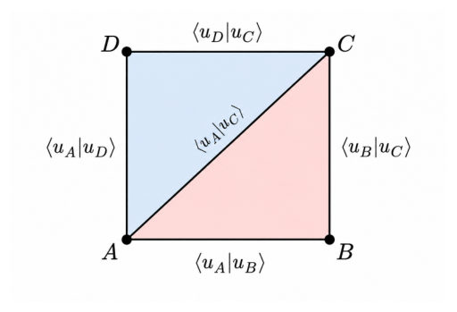
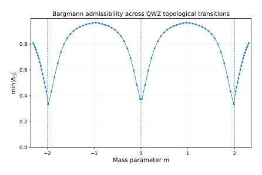
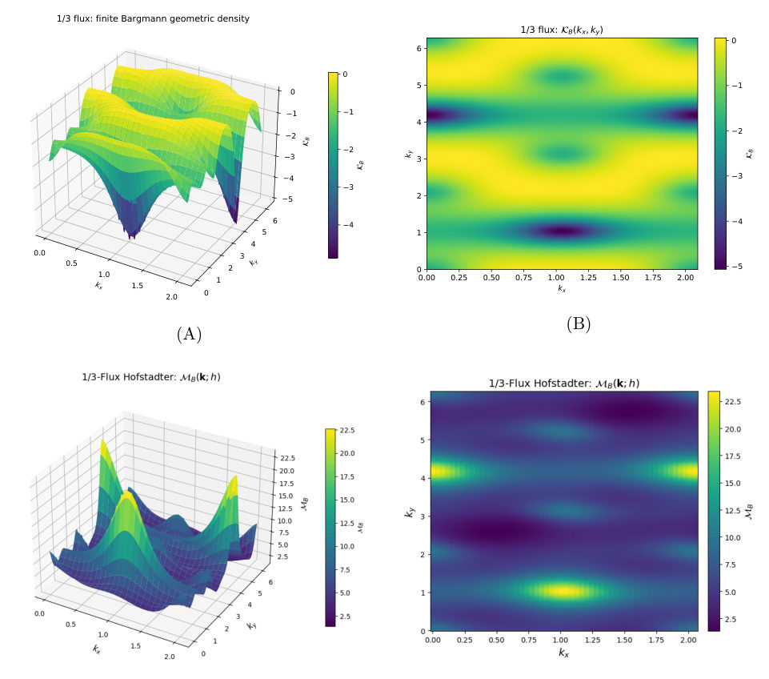
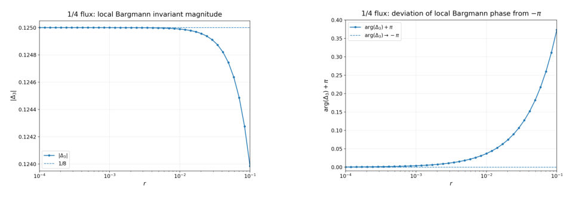
Summary. This work introduces a novel, finite-state geometric framework using third-order Bargmann invariants to calculate topological invariants like the Chern number. By analyzing quantum state overlaps on discretized parameter spaces, the authors derive both global topological numbers and local geometric densities. This method successfully reproduces established results for various lattice models, offering a powerful, purely numerical tool for characterizing band topology.
Why it may be interesting. The development of a purely finite-state, overlap-based method for calculating topological invariants is highly valuable as it provides robust diagnostics for numerical simulations where continuum approximations might fail or introduce artifacts.
Main problem. The paper develops a finite-state geometric framework to evaluate topological invariants, such as the Chern number, and characterize local quantum-state geometry without relying on continuous derivatives or dynamical evolution.
Main result. The framework successfully reproduces known integer Chern numbers for various lattice models (e.g., QWZ, Hofstadter) and provides local geometric densities ($K_B, M_B$) that complement the global topological invariant.
Method. It utilizes third-order Bargmann invariants, $\Delta_3$, constructed from gauge-invariant overlaps between quantum states on a discretized parameter space (e.g., Brillouin zone triangulation).
Model / system. The method is applied to several lattice models, including the Qi–Wu–Zhang (QWZ), SSH, and Hofstadter models, demonstrating its applicability from 1D closed loops to 2D parameter spaces.
Key observables. Chern Number ($C_n$), Oriented Bargmann Phase ($\gamma_ riangle$), Finite-resolution geometric density ($K_B$), and Complementary amplitude density ($M_B$).
Important parameters / regimes. The discretization mesh size ($h$), the parameters defining the specific lattice model (e.g., mass term $m$ in QWZ), and the flux values (e.g., 1/3-flux).
Assumptions / limitations. The method requires a 'Bargmann-admissible triangulation' such that the third-order invariant is non-zero for all elementary triangles.
Figures summary. Figures illustrate the construction of a finite Brillouin-zone cell from two oriented triangular Bargmann invariants and show the minimum magnitude of the elementary third-order Bargmann invariant across parameter ranges.
Paper structure. The paper introduces the finite-state framework using Bargmann invariants, applies it to the QWZ model to calculate the Chern number, and then extends the methodology to 1D (SSH) and 2D (Rice-Mele) systems to calculate winding numbers and Chern numbers, respectively.
We develop a finite-state geometric framework based on third-order Bargmann invariants for evaluating Chern numbers and characterizing local quantum-state geometry. Using gauge-invariant state overlaps, the framework evaluates the Chern number directly on discretized parameter spaces while retaining local geometric information through the phase-derived density and the complementary amplitude density, as well as signatures associated with changes in topological character. We apply the construction to the Qi--Wu--Zhang, $1/3$- and $1/4$-flux Hofstadter, SSH, and Rice--Mele models, including a rank-$2$ extension for isolated composite subspaces and applications to closed-loop and parameter-space topology. The resulting framework organizes Chern topology and local geometric information directly from finite-state data, providing a compact state-based description without relying on dynamical evolution.
Authors: Jiaxin Liu, Zuoxian Wang, Danyue Ma
Type: theory · Category: other · PDF: https://arxiv.org/pdf/2610.02625v1
Analysis basis: full PDF text, analyzed in chunks
Topic relevance: quantum measurements 3/5
Summary. This paper proves that for estimating parameters in multi-mode quantum systems, the Fisher information is superadditive under Gaussian measurements. It shows that joint measurements, such as Bell homodyne detection, outperform the best possible separate readouts by a measurable gain. This has significant implications for designing optimal quantum sensors using optical or microwave cavities.
Why it may be interesting. This work provides a rigorous theoretical understanding of measurement optimization in quantum optics, showing that collective measurements can extract more information than the sum of individual measurements, which is crucial for designing high-precision quantum sensors.
Main problem. The paper investigates whether Gaussian measurements can achieve a collective advantage over separate, independent measurements when estimating a parameter carried by the quadrature widths of multiple quantum modes.
Main result. Gaussian measurements can indeed beat the separate readout optimum, demonstrating that the Fisher information is superadditive for these specific measurements, with a maximum achievable gain bounded at approximately 12.7%.
Method. The analysis involves calculating the Quantum Fisher Information ($F$) for both joint (e.g., Bell homodyne) and separate measurements, quantifying the advantage via a 'gain' ratio.
Model / system. The system involves two or more independent quantum modes (optical or microwave), often modeled as thermal states, measured using Gaussian techniques like homodyne and Bell homodyne detection.
Key observables. Fisher Information ($F$), Measurement Gain (ratio of joint to separate $F$), Quadrature Widths ($ u_i$), and Response Functions ($\mu_i$).
Important parameters / regimes. Frequency ratios ($\omega_2/\omega_1$), Temperature ($T$), and the coupling strength or frequency splitting ($s$).
Assumptions / limitations. The analysis relies on the properties of Gaussian measurements and assumes the ability to perform ideal joint measurements like Bell homodyne detection.
Figures summary. Figures illustrate the comparison of Bell gain versus separate readout gain, showing the maximum gain achieved for thermal modes and the dependence on frequency ratios.
Paper structure. The paper develops the theoretical framework by comparing the Fisher information of joint measurements (Bell homodyne) against the sum of individual measurements, deriving bounds, and analyzing specific physical realizations like coupled resonators and thermal sources.
Quantum Fisher information adds over independent probes, so a single parameter is best measured probe by probe. We show that Gaussian measurements, the linear optics and homodyne detection of optical and microwave experiments, break this rule: two independent modes are better measured together. The uncertainty principle leaves a linear detector half of phase space, and for two modes the choice of half is a resource. Bell homodyne, a balanced beam splitter followed by two homodyne detectors, beats the best separate readout when the modes differ in quadrature width and in how the width responds to the parameter. Heterodyne detection splits a mode on a beam splitter to read both quadratures and pays one unit of vacuum noise for the empty port. Bell homodyne fills that port with the second mode, so the noise turns into signal. We prove that the gain stays below $(\sqrt2-1)^2=17.157\%$ for every parameter carried by widths. For thermal modes at one temperature, the canonical case, a gain was conjectured impossible. We prove that any frequency difference opens a temperature window and that the gain peaks at $12.699\%$ at frequency ratio $3.318$, where Bell homodyne is the optimal Gaussian measurement. Standard hardware reaches the gain: two coupled resonators with two homodyne detectors, or a phase-preserving amplifier whose idler band is fed by the same thermal source.
Authors: Rifzah Shahid, Amna Qadeer, Ali Raza Mirza
Type: theory · Category: quantum information and computing · PDF: https://arxiv.org/pdf/2610.02453v1
Analysis basis: full PDF text, analyzed in chunks
Topic relevance: correlated / nonlocal dissipation 3/5
Summary. This paper theoretically analyzes the entanglement decay of two qubits coupled to a common bath, focusing on the impact of initial correlations. It demonstrates that these correlations hasten entanglement sudden death, while applying periodic $\pi$ pulses can significantly extend the entanglement lifetime. The findings are important for understanding decoherence mitigation in open quantum systems.
Why it may be interesting. This work provides quantitative insights into how non-Markovian effects and initial system-bath correlations modify fundamental quantum measures like entanglement, which is crucial for designing robust quantum protocols.
Main problem. The study investigates how initial correlations between qubits and a common bosonic reservoir affect the entanglement dynamics of two qubits subjected to pure dephasing.
Main result. Initial correlations are shown to always accelerate entanglement sudden death compared to the factorized case, and periodic $\pi$ pulses can extend the entanglement lifetime by a factor of up to seven.
Method. The dynamics are calculated exactly for the reduced density matrix using the Ohmic spectral density, comparing factorized and correlated initial states.
Model / system. The system consists of two qubits coupled symmetrically to a common bosonic reservoir via a pure dephasing interaction. The Hamiltonian structure allows for exact solvability.
Key observables. Wootters concurrence, Entanglement Sudden Death (ESD) time, and the time evolution of the reduced two-qubit density matrix.
Important parameters / regimes. Coupling strength ($g$), reservoir spectral density (Ohmic), and the number of applied $\pi$ pulses ($N$).
Assumptions / limitations. The analysis assumes an Ohmic spectral density and utilizes approximations for the gap growth and bath averaging.
Figures summary. Figures compare concurrence decay curves for factorized vs. correlated states, and demonstrate the extension of entanglement lifetime by applying periodic $\pi$ pulses.
Paper structure. The paper systematically analyzes the dynamics by first establishing the factorized case, then incorporating initial correlations, and finally applying periodic dynamical decoupling pulses to extend coherence.
We study the exact entanglement dynamics of two qubits coupled to a common bosonic reservoir through a pure dephasing interaction. We ask how this dynamics changes when the qubits and the reservoir already share correlations before the qubit state is prepared. In that case the system and reservoir first interact for a long time and settle into a joint equilibrium state. Only afterward is the qubit pair projected onto the desired state by a local measurement. For an Ohmic spectral density we obtain the exact reduced two qubit dynamics. Using the Wootters concurrence we show that initial correlations always speed up entanglement sudden death relative to the factorized case, and that this gap grows quadratically with the coupling strength in the weak-to-moderate coupling regime. Finally we show that a symmetric sequence of periodic π pulses applied to both qubits extends the entanglement lifetime close to a factor of seven over the range of pulse numbers studied.
Authors: Letian Tang, Thomas Steckmann
Type: theory · Category: quantum information and computing · PDF: https://arxiv.org/pdf/2610.03307v1
Analysis basis: full PDF text, analyzed in chunks
Topic relevance: quantum measurements 3/5
Summary. This paper addresses the challenge of determining the stabilizer structure of a quantum state when measurements are corrupted by noise. The authors introduce a finder-verifier algorithm that leverages Bell sampling to estimate this structure accurately. The result shows that under weak noise, the required samples and computational time scale polynomially with system size and inverse accuracy, closing a gap between theoretical and practical quantum characterization methods.
Why it may be interesting. This work provides a concrete, resource-efficient quantum algorithm for characterizing the underlying symmetries of a quantum state, which is crucial for quantum error correction and quantum tomography protocols.
Main problem. The core problem is learning the stabilizer structure of a pure quantum state when the state is corrupted by noise modeled as a Pauli channel.
Main result. The authors develop Bell-sampling algorithms that can learn the stabilizer group to accuracy $\epsilon$ for states of low nullity, achieving polynomial sample and runtime complexity under weak noise conditions.
Method. They propose a finder-verifier scheme that iteratively extracts the stabilizer structure from partially corrupted Bell difference samples while certifying the purity loss.
Model / system. The system involves an $n$-qubit pure state $|\psi angle$ whose noisy realization $ ho$ is modeled by a Pauli channel. The structure is characterized by the stabilizer group $ ext{Stab}(\psi)$ and its nullity.
Key observables. Stabilizer Group ($ ext{Stab}(\psi)$), Stabilizer Nullity ($ u(\psi)$), Weak Stabilizer ($S$), Purity Loss ($\Delta\gamma( ilde{S})$).
Important parameters / regimes. Nullity $t$, accuracy $\epsilon$, total error probability $\lambda$, and the noise strength relative to $n$ and $t$.
Assumptions / limitations. The analysis assumes the noise is sufficiently weak (e.g., global depolarizing noise) to allow the weak stabilizer structure to remain encoded in the noisy state.
Figures summary. Figure 1 illustrates the iterative loop involving the Verifier (using reusable samples) and the Finder (using fresh batches) to reconstruct the stabilizer structure.
Paper structure. The paper progresses from defining the problem (learning structure from noisy states) to proposing the finder-verifier scheme. It then provides detailed mathematical derivations concerning the probability of Bell difference samples belonging to specific Pauli subgroups, culminating in complexity bounds for the different operational regimes (clean, intermediate, noisy).
Bell sampling efficiently learns the stabilizer group, and hence the stabilizer nullity, of pure states with little magic, a primitive underlying tomography and certification of low-magic states. Real devices, however, only prepare noisy images of the target, which we model as a Pauli channel acting on the ideal state; the resulting noisy state generically has no exact Pauli stabilizers. Existing structure learners for mixed states rely on such exact stabilizers. Agnostic tomography does not, but its guarantees scale exponentially in the nullity $t$. We show that the ideal stabilizer group remains encoded in the noisy state as the set of Pauli operators under which it is invariant. We give Bell-sampling algorithms that learn the group to accuracy $\varepsilon$ for states of nullity at most $t$. The difficulty is that noisy samples break the group structure pure-state learners rely on, so more samples can erase structure rather than reveal it. We resolve this with a finder-verifier scheme that extracts stabilizer structure from partially corrupted sample batches while certifying proposed updates. For sufficiently weak global depolarizing noise, both samples and runtime are $\mathrm{poly}(n,t,1/\varepsilon)$ when the channel's total error probability is at most of order $\varepsilon n/t$. Up to a constant total error probability ($\approx 0.16$), samples remain polynomial while classical processing costs $2^t$, and for any error probability below one a $4^t$ overhead suffices. Arbitrary Pauli channels exhibit the same three regimes, with more restrictive thresholds. For weak Pauli noise, this closes much of the gap between agnostic learners such as stabilizer bootstrapping and polynomial pure-state algorithms.
Authors: Zhenning Liu, Zhi-Yuan Wei, Michael Foss-Feig, Alexey V. Gorshkov, Andrew M. Childs
Type: theory · Category: quantum information and computing · PDF: https://arxiv.org/pdf/2610.03672v1
Analysis basis: full PDF text, analyzed in chunks
Topic relevance: analog quantum simulation 3/5
Summary. This paper introduces an ordering-aware theory to analyze and improve the accuracy of Trotterization for simulating quantum many-body dynamics. By quantifying how the sequence of Hamiltonian terms affects the error bound, the authors show that specific orderings, like sequential or wave-like, yield significantly more accurate simulations than standard methods. This establishes term ordering as a critical, exploitable degree of freedom in quantum simulation.
Why it may be interesting. This work provides crucial theoretical tools for improving the efficiency and accuracy of quantum simulation algorithms, directly impacting how quantum dynamics are modeled in quantum computing and AMO physics.
Main problem. The paper systematically studies the impact of the ordering of Hamiltonian terms on the accuracy of product-formula simulations (Trotterization) for quantum many-body dynamics.
Main result. The authors developed an ordering-sensitive bound on the Trotter error that is nearly optimal, showing that sequential or wave-like orderings significantly outperform standard brickwall circuits.
Method. They develop an efficiently computable, ordering-sensitive bound on the finite-step-size Trotter error by organizing error contributions by spatial support and employing graph-theoretic algorithms to optimize the term ordering.
Model / system. The study focuses on simulating the time evolution of quantum many-body systems governed by geometrically local, translation-invariant Hamiltonians, initially on 1D nearest-neighbor chains.
Key observables. Trotter Error, Optimality Ratio, Mean Optimality Ratios.
Important parameters / regimes. Product formula order ($p=2, 4, 6$), step size ($ au$), chain length ($n$).
Assumptions / limitations. The analysis focuses on 1D translation-invariant nearest-neighbor Hamiltonians, and the error bound is derived from the nondegenerate part of the leading-order error.
Figures summary. Figures illustrate different term orderings (e.g., brickwall vs. sequential) and compare Trotter errors for various models, while later figures compare performance metrics like the optimality ratio across different optimization strategies.
Paper structure. The paper progresses from establishing the core problem—the role of ordering—to developing the error bound based on spatial support, optimizing the ordering using de Bruijn graphs, and finally validating the findings by comparing sequential, wave-like, and brickwall orderings on random chains.
Product formulas are a basic tool for simulating quantum many-body dynamics, but a fundamental degree of freedom in their application---the ordering of Hamiltonian terms---has remained largely unexplored. Here we systematically study such ordering effects, quantifying their impact on simulation accuracy and exploiting them to design more accurate product-formula simulations. We develop an efficiently computable, ordering-sensitive bound on the finite-step-size Trotter error for geometrically local Hamiltonians for arbitrarily high-order product formulas. For translation-invariant one-dimensional chains, our bounds are close to exact second-, fourth-, and sixth-order Trotter errors in small-system tests, while on large-scale systems they improve on previous higher-order analytical bounds by orders of magnitude. We further use the local structure of the error bounds and estimates to optimize ordering efficiently, reducing the long-chain problem to a minimum-mean-weight-cycle problem on a weighted de Bruijn graph. For random translation-invariant chains, sequential (staircase-like) orderings consistently outperform standard brickwall circuits; when circuit depth is restricted, the optimizer instead favors wave-like parallel-sequential orderings, which preserve much of the accuracy advantage over brickwall circuits. These results establish ordering as a useful degree of freedom for both understanding and improving product-formula simulation.
Authors: John Blue, Zachary E. Chin, Vlad S. Oros, Isaac L. Chuang
Type: theory · Category: quantum information and computing · PDF: https://arxiv.org/pdf/2610.03659v1
Analysis basis: full PDF text, analyzed in chunks
Topic relevance: quantum measurements 3/5
Summary. This work analyzes quantum codeword sensing, determining how reliably a classical message can be recovered from weak, noisy quantum signals. The core finding is that maintaining quantum coherence via a persistent quantum memory provides a substantial advantage over any receiver limited to classical memory between measurements. This establishes a fundamental resource advantage of quantum memory in quantum information processing.
Why it may be interesting. It provides a concrete, information-theoretic demonstration of the advantage of quantum coherence and memory over classical processing when gathering weak, sequential quantum signals, which is fundamental to quantum sensing protocols.
Main problem. The paper addresses quantum codeword sensing: reliably identifying an unknown classical codeword transmitted sequentially to a quantum sensor, even when the transmitted bits are corrupted by noise.
Main result. A receiver utilizing a persistent quantum memory (QQ protocol) can achieve significantly higher reliability in decoding the original codeword compared to any receiver restricted to classical memory between time steps (CC or QC protocols).
Method. The analysis employs information-theoretic bounds, comparing the accessible information of different receiver classes (CC, QC, QQ) under weak signal regimes and noisy channels.
Model / system. The model involves a quantum sensor register subjected to sequential, weak phase interactions ($Z$-rotations) corresponding to the bits of a classical codeword. The comparison is drawn between receivers with persistent quantum memory versus those limited to classical memory storage.
Key observables. Decoding error probability, success probability ($p_{ ext{succ}}$), and the accessible mutual information $I(C_j; Y_j)$ in single time slots.
Important parameters / regimes. Total qubit budget ($Q$), rotation angle ($ heta$), total signal strength ($\Phi = Q heta$), and the error probability ($p$) of bit flips.
Assumptions / limitations. The comparison is rigorously made under the assumption of weak total signal strength ($\Phi o 0$) and the ability to use persistent quantum memory coherently across time steps.
Figures summary. Figures compare the success probability of the quantum memory receiver (QQ) against the theoretical upper bounds derived for classical memory receivers (QC upper bound), showing the quantum advantage.
Paper structure. The paper establishes the physical model and the three receiver classes (CC, QC, QQ). It then derives information-theoretic bounds for the classical and quantum memory receivers, culminating in explicit calculations showing the superior performance of the persistent quantum memory approach.
Consider the task of identifying an unknown classical codeword delivered to a register of quantum sensor qubits through a sequence of weak phase interactions that each encode one bit. Suppose that each received bit controls an identical $Z$-rotation of angle $θ$ applied to every sensor qubit; receivers may also use auxiliary qubits within a total qubit budget $Q$, with arbitrary control unitaries and entanglement among all qubits allowed during each reception step. When the total collected signal is weak ($Qθ\rightarrow 0$), we establish that a sensor coupled to a persistent quantum memory can identify the original codeword more reliably than any receiver with the same $Q$ and $θ$ but only classical memory between received bits, even when bit flips occur during transmission. In particular, for a family of $[n,k]$ binary simplex codes with even $k$ and $n=2^k-1$, we achieve exact correction of up to $t\leq(k-2)/4$ transmission errors by coupling the sensor register to a persistent quantum memory of the same size, using $Q = Θ((t+1)\log n)$ and $θ=\frac{2π}{k\sqrt{n+1}}$; for $t=o(\sqrt k)$, every comparable receiver with only classical memory instead has average success probability (over uniformly chosen codewords) tending to zero. Furthermore, under independent bit flips of any fixed probability $p<1/16$, our receiver with persistent quantum memory achieves decoding error tending to zero as $n\to\infty$ using $Q=O(\log n\log\log n)$ total qubits and the same $θ$. In contrast, every otherwise equivalent receiver with only classical memory has vanishing average success probability under the same stochastic error model.
Authors: Sebastian P. Kish, Simon J. Devitt
Type: theory · Category: quantum information and computing · PDF: https://arxiv.org/pdf/2610.02786v1
Analysis basis: full PDF text, analyzed in chunks
Topic relevance: quantum measurements 3/5
Summary. This theoretical work analyzes the interplay between quantum error correction and relativistic time dilation by examining how the relative phase accumulated between two separated quantum memories is preserved. The authors show that QEC does not eliminate the time difference, instead encoding it as a measurable relational phase rotation. This establishes protected quantum memories as a novel platform for testing quantum evolution involving relativistic time.
Why it may be interesting. It provides a concrete, physical realization where fundamental concepts of general relativity (time dilation) are mapped onto the abstract framework of fault-tolerant quantum computation, suggesting protected quantum memories are viable for relativistic metrology.
Main problem. The paper investigates how quantum error correction (QEC) affects the measurement of relativistic proper time differences ($\Delta au$) between two quantum memories following distinct worldlines.
Main result. Error correction does not erase time dilation; the accumulated time difference manifests as a measurable relational phase rotation, which can be converted into a deterministic logical gate at specific time intervals.
Method. The analysis uses theoretical derivations involving the evolution of joint quantum states under local operations, projecting the evolution onto the code space defined by stabilizer codes.
Model / system. The system involves quantum memories whose local evolution is governed by a clock transition frequency ($\omega_0$). The comparison is modeled by analyzing the relative evolution operator $U_{ ext{rel}}$ between two memories separated in spacetime.
Key observables. Relative phase rotation ($\delta heta$), code-space survival probability ($ ext{psurv}$), and conditional process fidelity ($ ext{Fcond}$).
Important parameters / regimes. The proper time difference ($\Delta au$), the code structure (e.g., phase-flip code), and the amplification factor ($A$).
Assumptions / limitations. The analysis assumes the code satisfies its normaliser condition and treats the relative phase as a coherent systematic offset rather than a decay mechanism.
Figures summary. Figures illustrate that locally corrected memories accumulate only the relative phase $\delta heta(t) = \omega_0\Delta au(t)$, and show code-space filtering for the phase-flip code at specific phase excursions.
Paper structure. The paper progresses by first establishing the relative phase accumulation (Theorem 1), then analyzing how QEC preserves this phase (Corollary 1), and finally detailing the conversion of this continuous phase into discrete logical gates (Corollary 2).
What does quantum error correction do to relativistic proper time? We show that when two error-corrected quantum memories follow distinct worldlines and are controlled by local references, their local correction histories factor exactly from the proper-time difference between them. Error correction therefore does not erase time dilation: when the memories are compared, the accumulated difference appears as a relational phase rotation. During locally referenced operation this rotation is invisible to every local error syndrome; at discrete phases admitted by a code, the final relational evolution instead returns exactly as a deterministic logical gate, including an $S$-type Clifford gate at a $π/2$ excursion. These results connect fault-tolerant quantum information with relativistic clocks and establish protected quantum memories as a platform for preserving proper-time information and for long-coherence tests of quantum evolution involving relativistic proper time.
Authors: Vladyslav Visnevskyi, Laura Mančinska
Type: theory · Category: quantum information and computing · PDF: https://arxiv.org/pdf/2610.03582v1
Analysis basis: full PDF text, analyzed in chunks
Topic relevance: quantum measurements 3/5
Summary. This paper rigorously analyzes the noise robustness of Weak Schur Sampling, a core measurement for quantum state estimation. It proves that the estimation error scales optimally with the noise level ($\epsilon$) and the system size ($n$), showing that the error does not accumulate naively. This establishes a crucial theoretical foundation for implementing quantum algorithms in noisy, real-world quantum hardware.
Why it may be interesting. This work is highly relevant to quantum information theory as it provides rigorous, quantitative guarantees on the practical feasibility of quantum algorithms (like QSE) when subjected to realistic noise channels.
Main problem. The paper addresses the critical issue of noise robustness in Weak Schur Sampling (WSS), a measurement fundamental to optimal quantum learning tasks like Quantum Spectrum Estimation (QSE). It investigates how the estimation accuracy degrades when the input quantum states are noisy rather than perfectly identical.
Main result. The authors prove that the expected output error in total variation is bounded by the sum of the inherent noiseless error ($\eta(n,d)=O(d/\sqrt{n})$) and an additive noise term ($\epsilon$), demonstrating that the error does not accumulate linearly with the system size $n$.
Method. The analysis employs advanced quantum information techniques, including bounding the error using the quantum Wasserstein distance ($W_1$) for general noise, and utilizing iterative replacement arguments for product noise models.
Model / system. The system involves estimating the spectrum of a target quantum state $ ho$ using $n$ copies. The noise is modeled either as independent, trace-distance-bounded product states or more generally using the quantum Wasserstein distance.
Key observables. The primary observable is the estimated spectrum $\hat{p} = \lambda/n$, and the diagnostic is the expected error in total variation, $\mathbb{E}[\|\hat{p} - p\|_1]$.
Important parameters / regimes. Key parameters include the noise level $\epsilon$ (trace distance) and the system size $n$, with the error scaling being $\epsilon + O(d/\sqrt{n})$.
Assumptions / limitations. The analysis makes strong claims about robustness, showing that weaker assumptions (like only bounding single-copy marginals) are insufficient to guarantee the desired error bounds.
Figures summary. Figure 1 illustrates the proof technique involving the sequential replacement of noisy registers with ideal copies to bound the total error accumulation.
Paper structure. The paper builds from establishing robustness under a simple product noise model (Theorem 15) to generalizing the result for arbitrary inputs using the quantum Wasserstein distance ($W_1$). It concludes by detailing the failure modes of weaker noise assumptions.
We initiate the study of weak Schur sampling (WSS) under noisy input. Many optimal quantum learning algorithms rely on this measurement, for instance in such fundamental tasks as quantum spectrum estimation (QSE) and quantum state tomography (QST). The standard analysis of WSS, QSE and QST assumes that the $n$ input copies of the target state $ρ$ are identical. We study what happens when they are not, a more realistic noisy scenario that breaks the very permutation symmetry on which WSS is built. In the simplest noise model, the copies are independent but not necessarily identical, i.e. they form a product state, and each is $ε$-close in trace distance to the $d$-dimensional target state $ρ$. A naive data-processing argument lets the per-copy errors accumulate to $nε$ on measurement output, growing with the input size. We prove that they do not accumulate: the expected output error in total variation is at most $ε+η(n,d)$, where $η(n,d)=O(d/\sqrt n)$ is the noiseless error, and the additive noise term $ε$ is optimal. Beyond noisy product states, for arbitrary inputs $ω$ we show that the outcome observables of WSS are $1/n$-Lipschitz with respect to the quantum Wasserstein distance $W_1$ of De Palma et al., so the error is at most $η(n,d)+\frac{1}{n}\|ω-ρ^{\otimes n}\|_{W_1}$. In particular, our results imply, for the first time, noise-robustness of Keyl and Werner's seminal algorithm for QSE, more than two decades after its introduction. Within our model of robustness, the promise cannot be weakened to closeness of single-copy marginals or to a global trace-distance budget alone, since in both cases some noisy inputs defeat every measurement and estimator. Our results are a necessary step towards optimal quantum learning in practice, and help make progress towards robustness of many other problems in quantum information theory.
Authors: Tomohiro Yamazaki
Type: theory · Category: quantum information and computing · PDF: https://arxiv.org/pdf/2610.03408v1
Analysis basis: full PDF text, analyzed in chunks
Topic relevance: quantum measurements 3/5
Summary. This paper presents a quantum computation scheme for linear optics that utilizes high-dimensional qudits to enhance the success probability of fusion gates beyond the standard 50% limit. By employing pairwise fusion gates and adaptive measurements, the authors demonstrate a method to deterministically generate 2D cluster states from 1D states. This significantly improves the loss tolerance and scalability of measurement-based quantum computation in photonic systems.
Why it may be interesting. This work directly addresses resource efficiency and scalability in photonic quantum computation by leveraging higher-dimensional entanglement (qudits) to overcome inherent probabilistic limitations of linear optics.
Main problem. To develop a linear-optical quantum computation scheme that efficiently performs qubit computation using high-dimensionally entangled qudits.
Main result. The authors propose a method using pairwise fusion gates that boosts the success probability of linear-optical fusions from 50% to $1-1/d$, enabling the generation of 2D cluster states from 1D states.
Method. The scheme employs a novel pairwise fusion gate (PFG) acting on qudits, combined with adaptive single-qudit measurements within a measurement-based quantum computation framework.
Model / system. The physical platform is photonic quantum computation using linear-optical fusion gates. The theoretical framework extends the ZX calculus to qudit systems, utilizing qudits of dimension $d>2$.
Key observables. Fusion success probability, loss tolerance threshold, and the successful generation of 2D cluster states.
Important parameters / regimes. Qudit dimension ($d$), the success probability $1-1/d$, and the bond-percolation threshold (50%).
Assumptions / limitations. The protocol assumes the ability to generate initial 1D cluster states deterministically and that the boosted fusion gates maintain their improved success probability.
Figures summary. Figure 1 illustrates ZX-diagrammatic notations for qudits and subspaces. Figure 2 details the transformations achieved by adaptive measurements $ ext{Mc}$ and $ ext{Mm}$. Figure 3 shows the step-by-step process of generating 2D cluster states from 1D states using boosted fusion gates. Figure 4 presents the numerical results on the loss threshold for the percolation-based scheme.
Paper structure. The paper introduces the problem of probabilistic fusion gates, proposes the PFG approach using qudits, details the use of adaptive measurements ($ ext{Mc}, ext{Mm}$) to generate 2D cluster states from 1D states, and finally analyzes the loss tolerance using a percolation-based scheme.
In this paper, we propose a linear-optical quantum computation scheme that starts from high-dimensionally entangled qudits but performs quantum computation on qubits defined in their subspaces. This approach enables us to increase the success probability of linear-optical fusions from $50\%$ to $1-1/d$ for qudits of dimension $d$ without relying on existing approaches using ancilla photons and quantum codes. In particular, we show that a 2D cluster state of qubits can be generated from 5-qudit 1D cluster states using pairwise fusion gates while preserving their boosted success probability. We numerically demonstrate that this approach can improve the loss tolerance of a percolation-based scheme while keeping the photon number per resource state constant.
← Index · ← Previous · Next →